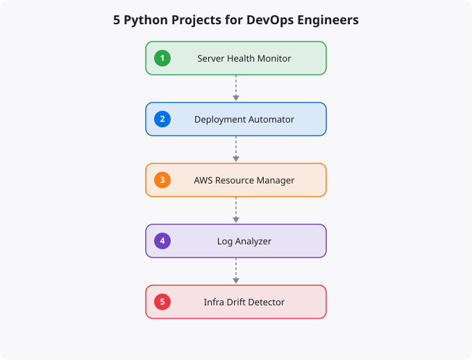

If you are learning DevOps and wondering how Python fits in, here is the honest answer: Python is the glue that holds modern infrastructure together. It is not about building web apps or doing data science — in DevOps, Python is how you automate the tedious work, monitor systems, deploy code, and make infrastructure behave the way you want it to.
But reading about Python is not the same as using Python. You need to build real things. Here are five projects that will genuinely improve your DevOps skills and give you something concrete to show on your resume and GitHub profile.
This is the first project every DevOps engineer should build. The idea is simple: write a Python script that checks the health of one or more servers and alerts you when something is wrong. Start with the basics — check CPU usage, memory consumption, disk space, and whether specific services are running. Use the psutil library for local system metrics and paramiko for checking remote servers over SSH.
import psutil
import smtplib
from datetime import datetime
def check_health():
cpu = psutil.cpu_percent(interval=1)
memory = psutil.virtual_memory().percent
disk = psutil.disk_usage('/').percent
alerts = []
if cpu > 80:
alerts.append("CPU usage critical: " + str(cpu) + "%")
if memory > 85:
alerts.append("Memory usage high: " + str(memory) + "%")
if disk > 90:
alerts.append("Disk space low: " + str(disk) + "% used")
return alerts
if __name__ == "__main__":
issues = check_health()
for issue in issues:
print("[ALERT]", issue)What this teaches you: System monitoring fundamentals, working with system APIs, alerting patterns, and the basics of observability. Every monitoring tool — Prometheus, Datadog, Nagios — works on the same principles you will learn here.
Take it further: Add a simple Flask dashboard that shows system health in real time. Store historical data in SQLite. Set it up as a cron job that runs every 5 minutes.
Deployment is one of the core responsibilities of DevOps. Build a script that takes your application code, runs tests, builds it, and deploys it to a server. This is essentially a simplified CI/CD pipeline in pure Python.
import subprocess
import sys
from datetime import datetime
def run(cmd, description):
print("[DEPLOY]", description, "...")
result = subprocess.run(cmd, shell=True, capture_output=True, text=True)
if result.returncode != 0:
print("[FAILED]", description)
print(result.stderr)
sys.exit(1)
print("[OK]", description)
def deploy():
ts = datetime.now().strftime("%Y%m%d_%H%M%S")
run("git pull origin main", "Pulling latest code")
run("pip install -r requirements.txt", "Installing dependencies")
run("python -m pytest tests/ -v", "Running tests")
run("cp -r /var/www/app /var/www/backup_" + ts, "Creating backup")
run("sudo systemctl restart myapp", "Restarting application")
print("\n[SUCCESS] Deployed at", ts)
if __name__ == "__main__":
deploy()What this teaches you: The deployment pipeline pattern — pull, test, build, backup, deploy. You will understand exactly what Jenkins, GitHub Actions, and GitLab CI do under the hood.
Cloud infrastructure management is a daily DevOps task. Build a Python tool using boto3 that lists, creates, and manages cloud resources. Start simple — list all EC2 instances and their states.
import boto3
from tabulate import tabulate
def list_instances():
ec2 = boto3.client('ec2')
response = ec2.describe_instances()
instances = []
for reservation in response['Reservations']:
for inst in reservation['Instances']:
name = "unnamed"
for tag in inst.get('Tags', []):
if tag['Key'] == 'Name':
name = tag['Value']
instances.append({
'Name': name,
'ID': inst['InstanceId'],
'State': inst['State']['Name'],
'Type': inst['InstanceType'],
'IP': inst.get('PublicIpAddress', 'N/A')
})
print(tabulate(instances, headers="keys", tablefmt="grid"))
if __name__ == "__main__":
list_instances()What this teaches you: Working with cloud provider APIs, understanding resource management, cost optimization. This is exactly how Terraform and Pulumi interact with cloud providers.
Every production system generates logs. Build a tool that reads log files, extracts patterns, and generates useful summaries. This is the skill you need at 2 AM when production is down and you are scanning through thousands of log lines.
import re
from collections import Counter
def analyze_logs(filepath):
status_codes = Counter()
ips = Counter()
errors = []
with open(filepath) as f:
for line in f:
status_match = re.search(r'" (\d{3}) ', line)
if status_match:
code = status_match.group(1)
status_codes[code] += 1
if code.startswith('5'):
errors.append(line.strip())
ip_match = re.search(r'^(\d+\.\d+\.\d+\.\d+)', line)
if ip_match:
ips[ip_match.group(1)] += 1
print("=== Status Codes ===")
for code, count in status_codes.most_common():
print(" " + code + ": " + str(count))
print("\n=== Top 5 IPs ===")
for ip, count in ips.most_common(5):
print(" " + ip + ": " + str(count) + " requests")
if __name__ == "__main__":
analyze_logs("/var/log/nginx/access.log")What this teaches you: Regular expressions, file processing, data aggregation, pattern recognition in system behavior.
This is the most advanced project on the list. Infrastructure drift happens when the actual state of your cloud resources does not match what your Terraform code says. Build a tool that detects this by comparing expected configuration against actual cloud state using the AWS API.
What this teaches you: Infrastructure as Code principles, state management, configuration comparison. This is the exact problem that terraform plan solves — you are building a simplified version of the same concept.
Building the projects is only half the value. Create a GitHub repository for each with a clean README that explains what it does, how to use it, and what you learned building it. When you mention these in interviews, talk about the real problems they solve. Do not say "I built a Python script." Say "I built an automated deployment pipeline that reduced deployment time from 15 minutes of manual work to a single command."
Python for DevOps is not about machine learning or data science. It is about automation -- writing scripts that provision infrastructure, process log files, send alerts, deploy applications, and make operations tasks repeatable and reliable. The Python skills that matter most for DevOps are different from what most Python tutorials focus on.
Essential DevOps Python:
subprocess - Run shell commands from Python
os, sys, pathlib - File system operations
requests - HTTP API calls (AWS APIs, Slack, monitoring)
json, yaml - Config file processing
boto3 - AWS SDK for Python
logging - Proper logging (not print statements)
argparse - CLI argument parsing for scripts
docker SDK - Docker operations from Python
Useful Python for DevOps:
paramiko - SSH connections from Python
fabric - Remote server management
click - Better CLI argument parsing
pydantic - Data validation for configs
httpx - Modern async HTTP
schedule - Task scheduling
Nice to have:
asyncio - Concurrent operations (useful for scanning/monitoring)
multiprocessing - Parallel operations on server fleetsProject 1 -- Server Health Monitor: A Python script that checks CPU, memory, and disk usage using the psutil library, sends alerts to Slack when thresholds are exceeded, and logs all metrics to a file or CloudWatch. This teaches: library usage, HTTP API calls, environment variables for credentials, logging, and scheduling with cron.
Project 2 -- Automated AWS Resource Report: A Python script using boto3 that queries all EC2 instances, lists their state, type, and tags, calculates estimated monthly cost, and emails a daily report. This teaches: AWS SDK usage, IAM roles vs access keys, data processing, and email automation.
Project 3 -- Log Analyser: A script that reads application logs, extracts error patterns using regex, counts occurrences by error type and time window, and generates a summary report. This teaches: file handling, regex, datetime processing, and data aggregation -- all extremely common in DevOps work.
Project 4 -- Docker Container Manager: A Python script using the Docker SDK that lists running containers, checks health, restarts unhealthy ones, and cleans up old images. This teaches: SDK usage, error handling, and automation of operational tasks.
Project 5 -- CI/CD Deployment Script: A Python script that validates environment, runs tests, builds Docker images, pushes to registry, and deploys to Kubernetes. This is the type of automation that appears in real production CI/CD pipelines. Teaches: subprocess, Docker SDK, kubernetes client, and production-grade error handling.
In software development, Python is used to build applications -- web backends, APIs, data processing pipelines. In DevOps, Python is used for automation and tooling -- scripts that manage infrastructure, process logs, integrate with cloud APIs, and automate deployment. DevOps Python rarely builds user-facing features but focuses on operational reliability.
Start with Python. Larger DevOps tooling ecosystem (boto3, Ansible, Airflow all use Python). Easier to prototype quickly. Better for scripting. Once you have solid Python, Go is worth learning for building performance-critical tools and understanding tools like Kubernetes, Terraform, and Docker which are written in Go.
Python 3.10+ for new scripts. Most importantly: always use virtual environments (python3 -m venv venv) to avoid dependency conflicts between projects. Pin versions in requirements.txt for reproducibility. Use pyproject.toml and tools like poetry for more complex projects.
Yes. India is one of the fastest-growing tech markets globally. These skills are in high demand across startups, MNCs, and product companies in Bangalore, Hyderabad, Pune, and Mumbai.
Follow official documentation, tech blogs from practitioners, GitHub repositories, and communities like Dev.to, Hashnode, and Reddit. Avoid news that creates urgency without substance.
Official documentation first. Then practical tutorials. Then build real projects. SRJahir Tech articles are written from real production experience — bookmark the series that matches your learning goal.
Consistent daily practice for 3-6 months produces real, usable skills. The key is building projects, not just reading. Every article on SRJahir Tech includes practical examples you can implement today.
Yes. All articles on SRJahir Tech are completely free. No paywalls, no subscriptions. Quality technical education should be accessible to everyone, especially aspiring engineers in India.